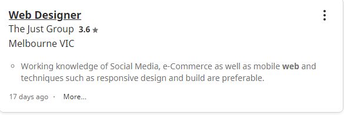
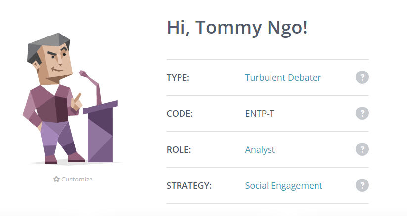
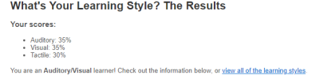
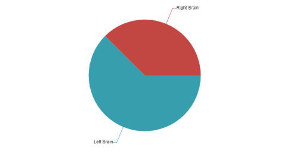

Like most people my interest in IT come from playing games, surfing the web and just being on the internet itself. IT appeal to me because of the variety of jobs in the field that they offer, not only that but you can be quite flexible with your career choices such as being technical writer, web developer, IT director and so much more. Since the job market for technology is still growing there will many more job opportunity in near future. These jobs will require high skill level and training which can get very stressful, but it is compensated with very good pay which another reason for my interest in IT.
I didn’t really have any experience with IT until I was 12-year-old. But the person that got me really into IT was a youtuber name Michael Reeves, who is know for his “comedy-tech” video. Where he asks his viewer to give him suggestion to build something such as a gas-powered fishing pole or a scream powered microwave. Watching him make me realize that IT is not all about data and sitting in front of a computer for 24/7 but it also can be fun and practical, by building the thing you want and programing what you want it to do.
There is multiple reason why I choose to study at RMIT, the first reason is that is very accessible since the campus in located in the CBD getting to and from there is very easy. From what I heard, people says that RMIT is the perfect university for computing and technology, it is also in the name. I also have mates from RMIT recommended me as well, they said it easy to make friends and just have a great vibe in general.

Link to job -
Click Here
A web designer is someone who builds and create website or web pages with the combination of things such as visual design elements including text, photos, graphics, animations and videos. They could make an entire new website or make adjustment to an existing page. The responsibility of this position is to keep the consistency of online content and function with the brand values and direction, also to improve on their website imagery, copy and content managed functions. What standout to me in this position is that is in the CBD, which is very convenient for me to travel to, along with some other benefits as well such as bring your dog to work.
This position is required some experience as a web designer or similar role and front-end coding skills such as HTML and CSS. It is also preferable to have some experience in the salesforce platform. Working knowledge of social media, e-commerce and mobile web is also needed. Lastly you need to have a great communication and interpersonal skill as you will be working in a team most of the time.
Currently I only have little knowledge of front-end coding, however I am great at communicating with other people, but this can be improved on. I am also a hard worker in which I would put in extra effort and time in stuff I do really enjoy doing.
To obtain all these skills and experience I will need to graduate from RMIT with a Bachelor’s of I.T. By the end of the degree, I will be able to learn how to code HTML and CSS. During that time my communication skill will also be improved through group project and activates.



The results of the first one (Myers-Briggs) shows that I’m a ‘Debater’ personality or is known as the devil’s advocate. Meaning I am uncompromisingly honest, but will argue enthusiastically in something I don’t believe in. However, this will help me to develop a better sense of others reasoning, but better understanding of opposing ideas as I will be the one arguing them. The second test (Learning style test) shows that I’m an auditory and visual learner meaning I learn a lot easier by hearing and listening and understanding and remembering easier by sight. Lastly the third test (Left Brain vs Right Brain) shows that I’m more of a left-brain person. Indicating I’m more of a logical person rather than emotional.
While it may seem like I’m disagreeing with a person ideas or concept but, I’m trying to have a better understanding of that person viewpoint. Is also important for me to communicate through talking to people or someone showing it to me as I am an auditory and visual leaner. This mean if I ever need help from another team member it will be easier if I’m able to see and hear instruction from the person helping me. Being more of a left-brain person means I will tackle problem that arrive in team more logically rather than emotionally, it also means I would stuff planned out and orderly.
When forming a team, it is important for me to have someone who is not afraid to give out ideas and not to be discourage when one of us disagree. Being a visual and auditory leaner, it will be helpful for someone in my team to demonstrate something that I don’t complete understand rather than writing specific detail instruction on how to do it. Therefore, I believe having people with different attribute on a team will help the team progress faster and having more work to complete faster.
-Overview
As mentioned, before I love traveling especially with friends or family, however, there are sometimes they are not available, so you must travel by yourself. Traveling by yourself can sometimes be very overwhelming as there are many factors that you need to consider such as money, hotel, and much more. Therefore, I want to make an application that will help the user traveling for the first time or by themselves more enjoyable. This application with consists of programs that will help the user find the cheapest flight to and from their destination, also help them to find an affordable place to stay at. The application can also help the user to find fun and affordable activities, it can also recommend foods based on where you are. The application will also share useful information such as the culture and the do and don’t when visiting another country to avoid the risk of offending anyone.
-Motivation
This project idea came to me when I was planning a road trip with my mates last year. I notice how hard it was, especially when everything is not on one application. We have searched the web for hours until we find a decent and affordable hotel to stay at and we spent another hour finding a ticket that was cheap as well. Everything was very disorganized, so it was very overwhelming for us. With this application, everything will be in one place, so it is much easier to organize. There is also a lot of people out there who want to travel by themselves but are too scared because of the process and the planning of it, hopefully, this app will encourage them to do it and make the process easier.
-Description
This app is a travel guide that will help the user planning experience easier. When the user first opens the app, it will require them to either login or sign up. If the user doesn’t already have an account, it will ask them to make a profile by filling in their details. During the process of making their profile, they will need to verify their ID as well to make sure the user is over 18. Once the user is done making a profile it will take them to the homepage where they can start using the app. Within the app, the user can change their details whenever they click on My Profile at the top of the application.
On the homepage, the user will find information and news from a different country around the world. When the user scrolls down they will see different events that are happening soon. This will consist of the date and the location of where it is happening. In the top left corner, there will be an option where the user can open and see 5 different sections. First is the ‘homepage’ which is where they initially start. The second section will be ‘flight’, where it will show the current cheapest ticket around the world. In the third section, there will be a ‘local tip’ from different users around the world, for example, “watch out for the pickpocket in this area” or “try this food at this restaurant”. There would be another section where you submit your experience or tips to other users. In this section you would be able to find 3 options, you can either post a picture or a video and then post a text underneath it. In the fifth section, it will be 'thing to do', where it shows users different activities around the world, such as snowboarding in this location or sightseeing in this location. Lastly, there will be an option underneath where the user can put feedback on how the application can be improved.
When the user wants to start planning their trip, the user must press the plus icon in the top right of the application. After that the application would ask the user to put in the location, they are headed then they would need to put in how many people are they traveling with. This will help the program to generate the cheapest hotel and flight tickets based on how many people are going. Next, they would choose planes ticket and hotels. After they process their payment, the user will be then taken to a new page. This page will contain upcoming events that are happening near the location they are traveling to, it also contains information about the location they are traveling to, such as foods to try out around the areas and places to visit.
-Tools and Technology
Would need a computer that is strong enough to run programs such as JavaScript, and Quixy. With Quixy it will help me mind map what my application will look like, and JavaScript will help me build the program itself. Will also need a book and pen to design a mockup of the application. Also, have a few people test out the app to get feedback.
-Skills Required
Knowledge of front-end coding for designing and developing an app is required. Also need to know how to operate programs such as Quixy. Having great teamwork, communication and problem-solving skills will also be important as most of the time you will be working in a team. While getting programming software is easy because RMIT will provide them to you. However, obtaining the skills to operate these programs will be time-consuming, but it will be worth it because you will gain valuable and in-demand skills. Teamwork and communication skills can be obtained through doing group activities in class.
-Outcome
If the project ends up becoming successful, the outcome would be people will have a more enjoyable experience planning their trip and saving their money at the same time. So, when people plan their first trip it won’t be as overwhelmed as all the information, they need will be organized into one spot. Not only that they would also know what activities to do in the areas as the application would recommend them. This will encourage people to go on trips more and experience different types of culture.